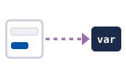

01문제munje · The hole문자열 연결munjayeol yeongyeol
사용자 입력을 SQL 문자열에 그대로 붙이면 위험해요.sayongja imnyeogeul SQL munjayeore geudaero buchimyeon wiheomhaeyo.
Gluing user input straight into the SQL string is dangerous.
SQL injection in a code review · Explain the hole and the fix to a teammate
The database cannot tell your words from your commands if you glue them into one string. Send them apart.
One review comment, in order: name the hole, say the damage, show where, give the fix, ask for the change.
Lyric: Korean in English letters, so you can read it out loud. eo sounds like the u in up, eu like the oo in good, ae like the e in bed.
Space listen · ← → move · K show text
사용자 입력을 SQL 문자열에 그대로 붙이면 위험해요.sayongja imnyeogeul SQL munjayeore geudaero buchimyeon wiheomhaeyo.
Gluing user input straight into the SQL string is dangerous.
작은따옴표 하나로 값이 끝나고, 나머지는 명령어가 돼요.jageunttaompyo hanaro gapshi kkeunnago, nameojineun myeongnyeongeoga dwaeyo.
One single quote ends the value, and the rest becomes a command.
공격자가 다른 사람의 데이터나 저장된 비밀번호를 읽을 수 있어요.gonggyeokjaga dareun sarame deiteona jeojangdwen bimilbeonhoreul ilgeul su isseoyo.
An attacker can read other people's data or stored passwords.
로그인 확인이 없는 API는 누구나 호출할 수 있어서 더 위험해요.rogeuin hwagini eomneun API-neun nuguna hochulhal su isseoseo deo wiheomhaeyo.
An API with no login check is worse, because anyone can call it.
리뷰할 때 SQL 문자열 옆에 더하기 기호가 있는지 봐요.ribyuhal ttae SQL munjayeol yeope deohagi gihoga inneunji bwayo.
When reviewing, look for a plus sign next to SQL text.

그 변수가 요청에서 왔는지 끝까지 따라가 봐요.geu byeonsuga yocheongeseo wanneunji kkeutkkaji ttaraga bwayo.
Follow the variable back to see if it came from the request.
값은 물음표로 바꾸고 따로 바인딩해요.gapseun mureumpyoro bakkugo ttaro baindinghaeyo.
Replace the value with a question mark and bind it separately.
정렬 컬럼은 바인딩이 안 돼서 허용 목록으로 확인해요.jeongnyeol keolleomeun baindingi an dwaeseo heoyong mongnogeuro hwaginhaeyo.
Sort columns can't be bound, so check them against an allowlist.
본인이나 관리자만 조회할 수 있게 권한도 확인해요.boninina gwallijaman johwehal su itge gweonhando hwaginhaeyo.
Also check permission, so only the owner or an admin can look it up.
이 부분은 SQL 인젝션 위험이 있어서 바인딩으로 바꿔 주세요.i bubuneun SQL injekshyeon wiheomi isseoseo baindingeuro bakkweo juseyo.
This part has an SQL injection risk, so please change it to binding.
The two things people get wrong most.
특수문자만 막으면 충분하지 않아요?teuksumunjaman mageumyeon chungbunhaji anayo?
Isn't blocking special characters enough?
아니요. 필터는 빠지는 경우가 생겨서 바인딩이 기본이에요.aniyo. pilteoneun ppajineun gyeonguga saenggyeoseo baindingi gibonieyo.
No. Filters miss cases, so binding is the default.
A blocklist has to guess every trick. Binding makes the value plain data, so there is nothing to guess.
LIKE 검색어도 바인딩할 수 있어요?LIKE geomsaegeodo baindinghal su isseoyo?
Can a LIKE search word be bound too?
네. 퍼센트 기호를 값에 붙여서 바인딩하면 돼요.ne. peosenteu gihoreul gapse butyeoseo baindinghamyeon dwaeyo.
Yes. Add the percent signs to the value, then bind it.
Write ILIKE ? in the query and pass %word% as the value.
Answer in your head, then tap Listen to compare.
왜 이걸 바꿔야 돼요?wae igeol bakkweoya dwaeyo?
Why do we need to change this?
검색어에 따옴표를 넣으면 쿼리가 바뀔 수 있어서요.geomsaegeoe ttaompyoreul neoeumyeon kweoriga bakkwil su isseoseoyo.
Because a quote in the search word can change the query.
정렬 컬럼도 물음표로 바꾸면 돼요?jeongnyeol keolleomdo mureumpyoro bakkumyeon dwaeyo?
Can I replace the sort column with a question mark too?
아니요. 컬럼 이름은 바인딩이 안 돼서 허용 목록을 써야 돼요.aniyo. keolleom ireumeun baindingi an dwaeseo heoyong mongnogeul sseoya dwaeyo.
No. Column names can't be bound, so use an allowlist.
테스트는 어떻게 했어요?teseuteuneun eotteoke haesseoyo?
How did you test it?
보통 검색어하고 따옴표가 들어간 검색어를 둘 다 확인했어요.botong geomsaegeohago ttaompyoga deureogan geomsaegeoreul dul da hwaginhaesseoyo.확인 필요 · checkcheck
I checked both a normal search word and one with a quote in it.
Two safe lines to buy time.
Tap a word's play button to hear it. Hide one side, then recall it before you tap to check.
Lyric: Korean in English letters, so you can read it out loud. eo sounds like the u in up, eu like the oo in good, ae like the e in bed.
사용자 입력을 SQL 문자열에 그대로 붙이면 위험해요. 작은따옴표 하나로 값이 끝나고, 나머지는 명령어가 돼요.sayongja imnyeogeul SQL munjayeore geudaero buchimyeon wiheomhaeyo. jageunttaompyo hanaro gapshi kkeunnago, nameojineun myeongnyeongeoga dwaeyo.
Gluing user input straight into the SQL string is dangerous. One single quote ends the value, and the rest becomes a command.
공격자가 다른 사람의 데이터나 저장된 비밀번호를 읽을 수 있어요. 로그인 확인이 없는 API는 누구나 호출할 수 있어서 더 위험해요.gonggyeokjaga dareun sarame deiteona jeojangdwen bimilbeonhoreul ilgeul su isseoyo. rogeuin hwagini eomneun API-neun nuguna hochulhal su isseoseo deo wiheomhaeyo.
An attacker can read other people's data or stored passwords. An API with no login check is worse, because anyone can call it.
리뷰할 때 SQL 문자열 옆에 더하기 기호가 있는지 봐요. 그 변수가 요청에서 왔는지 끝까지 따라가 봐요.ribyuhal ttae SQL munjayeol yeope deohagi gihoga inneunji bwayo. geu byeonsuga yocheongeseo wanneunji kkeutkkaji ttaraga bwayo.
When reviewing, look for a plus sign next to SQL text. Follow the variable back to see if it came from the request.
값은 물음표로 바꾸고 따로 바인딩해요. 정렬 컬럼은 바인딩이 안 돼서 허용 목록으로 확인해요. 본인이나 관리자만 조회할 수 있게 권한도 확인해요.gapseun mureumpyoro bakkugo ttaro baindinghaeyo. jeongnyeol keolleomeun baindingi an dwaeseo heoyong mongnogeuro hwaginhaeyo. boninina gwallijaman johwehal su itge gweonhando hwaginhaeyo.
Replace the value with a question mark and bind it separately. Sort columns can't be bound, so check them against an allowlist. Also check permission, so only the owner or an admin can look it up.
이 부분은 SQL 인젝션 위험이 있어서 바인딩으로 바꿔 주세요.i bubuneun SQL injekshyeon wiheomi isseoseo baindingeuro bakkweo juseyo.
This part has an SQL injection risk, so please change it to binding.
Q. 특수문자만 막으면 충분하지 않아요?teuksumunjaman mageumyeon chungbunhaji anayo?
Q. Isn't blocking special characters enough?
A. 아니요. 필터는 빠지는 경우가 생겨서 바인딩이 기본이에요.aniyo. pilteoneun ppajineun gyeonguga saenggyeoseo baindingi gibonieyo.
A. No. Filters miss cases, so binding is the default.
Q. LIKE 검색어도 바인딩할 수 있어요?LIKE geomsaegeodo baindinghal su isseoyo?
Q. Can a LIKE search word be bound too?
A. 네. 퍼센트 기호를 값에 붙여서 바인딩하면 돼요.ne. peosenteu gihoreul gapse butyeoseo baindinghamyeon dwaeyo.
A. Yes. Add the percent signs to the value, then bind it.
Q. 왜 이걸 바꿔야 돼요?wae igeol bakkweoya dwaeyo?
Q. Why do we need to change this?
A. 검색어에 따옴표를 넣으면 쿼리가 바뀔 수 있어서요.geomsaegeoe ttaompyoreul neoeumyeon kweoriga bakkwil su isseoseoyo.
A. Because a quote in the search word can change the query.
Q. 정렬 컬럼도 물음표로 바꾸면 돼요?jeongnyeol keolleomdo mureumpyoro bakkumyeon dwaeyo?
Q. Can I replace the sort column with a question mark too?
A. 아니요. 컬럼 이름은 바인딩이 안 돼서 허용 목록을 써야 돼요.aniyo. keolleom ireumeun baindingi an dwaeseo heoyong mongnogeul sseoya dwaeyo.
A. No. Column names can't be bound, so use an allowlist.
Q. 테스트는 어떻게 했어요?teseuteuneun eotteoke haesseoyo?
Q. How did you test it?
A. 보통 검색어하고 따옴표가 들어간 검색어를 둘 다 확인했어요.botong geomsaegeohago ttaompyoga deureogan geomsaegeoreul dul da hwaginhaesseoyo.
A. I checked both a normal search word and one with a quote in it.
잠깐만요, 이 값이 어디서 오는지 확인해 볼게요.jamkkanmanyo, i gapshi eodiseo oneunji hwaginhae bolgeyo.
One moment, I'll check where this value comes from.
보안 관련이라서 한 번 더 봐 주실 수 있어요?boan gwallyeoniraseo han beon deo bwa jushil su isseoyo?
It's security related, so could you take one more look?
Say it in your head first, then tap the box to check.